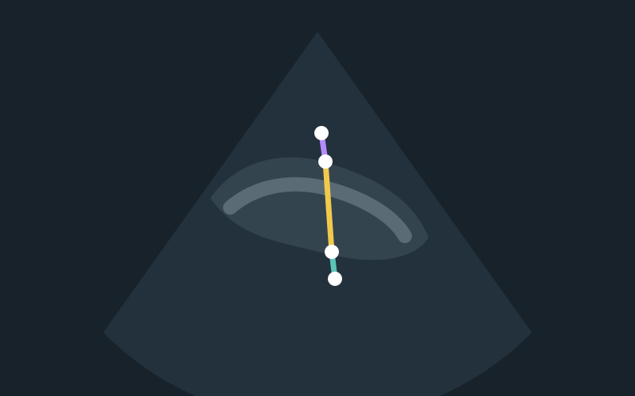
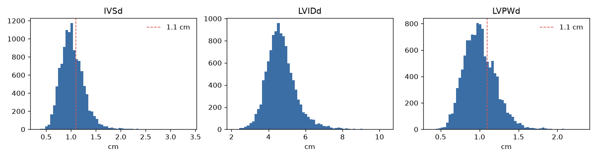

作品概要
上傳一張心臟超音波（PLAX 切面）圖片，系統自動量測 IVSd、LVIDd、LVPWd 三個心壁數值，判斷是否疑似左心室肥厚，再由 Gemini 生成醫師版與白話版報告。
訓練資料是 Stanford 的 EchoNet-LVH 資料集（限研究與非商業用途）。本系統不是醫療診斷工具。
來源：README.md
我負責的部分
個人作品。資料探勘、模型訓練、後端 API、手機 App 和報告品質評估都由我完成。
技術與工具
- PyTorch U-Net（ResNet 編碼器）：輸出 4 通道熱力圖，找出 4 個關鍵點。三條量測線首尾相接，所以 4 個點就能算出 3 個數值。
- Google Colab（T4 GPU）：訓練模型。
- FastAPI：提供
/analyze、/report、/chat、/samples、/health等 API。 - Gemini API（
gemini-3.5-flash-lite，免費方案）：產生報告和回答追問。報告會做數字一致性檢查，失敗時改用模板。 - Expo / React Native：手機 App，有首頁、範例圖、量測結果、AI 報告、問 AI 五個畫面。
製作過程
- 第 1 週：資料探勘96.9% 的影片（11,173 支）三條量測線在同一格畫面上首尾相接，確認「4 個關鍵點」的設計可行。從 zip 直接讀影片，不用解壓。
- 第 2 週：擷取訓練資料取標註那一格，轉灰階、補邊成正方形、縮成 256×256。用座標反算量測值，和醫師數值平均差小於 0.05 mm。
- 第 3 週：第一版模型一開始用加權 MSE，模型輸出全 0（heatmap collapse）。改成空間 softmax 交叉熵後才學得起來。
- 第 4 週：資料量實驗（v2）訓練資料從 2,400 張增加到 9,756 張，LVPWd 誤差降 16%、LVIDd 降 19%，IVSd 幾乎不變。
- 第 5 週：Gemini 報告模型不接受
thinking_budget=0，回傳 400 錯誤，改成自動降級重試。Prompt 改用「本系統設定的門檻」措辭，避免寫成醫學標準。 - 第 7 週：報告品質評估30 份報告中有 7 份因 Google 伺服器忙碌（503、504）改用模板，所以加上備用模型自動切換。
- v3 消融實驗試了厚度損失加強化增強（v3a）、384 解析度（v3b）、ResNet34（v3d）和 TTA。384 解析度讓 IVSd 變差，TTA 幾乎沒有效果又慢約 6 倍，最後採用 v3d。
目前成果
最終模型 v3d（ResNet34、256 解析度）在 325 張測試圖上的平均誤差：
- LVPWd 1.24 mm、LVIDd 2.14 mm、IVSd 1.52 mm（原論文為 1.2、2.4、1.4 mm）
- 肥厚判斷準確率 85.2%（v2 為 81.2%）
AI 報告品質評估（30 例，分層抽樣）：數字一致率、結論一致率、無不當用語、附免責聲明都是 100%，報告平均生成 12.2 秒。

待補：App 畫面截圖。資料集影像不能公開，截圖不可以出現超音波畫面。
目前的限制：
- 上傳圖片如果不知道比例尺，只能用資料集中位數估計，公分值僅供參考。
- 可讀性評估還沒做：要請 2～3 位同學填問卷。